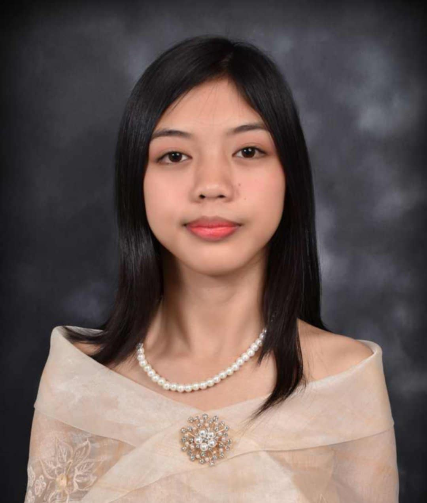

HELLO AND WELCOME TO MY SPACE!
This is a reflection of my journey-a glimpse into my biography. This is for sharing about my path now, my experiences, my life from the past to the present, my interests and hobbies, my life motivations, and my path moving forward.
I am known as Madel Penuel Yuzon Licup, born on August 11, 2006, in San Francisco, Lubao, Pampanga. I grew up with my parents, Vladimira, my mother, and Esmeraldo, my father, along with my two younger siblings, James Emmanuel and Jade Samuel. I am currently in my first year of college, pursuing a Bachelor of Science in Computer Science at Megabyte College Foundation Inc.
My life may have been simple, but it was full of love. Though there were misunderstandings, I knew those were part of life. My parents, Mama Vladimira, and Dadad Esmeraldo, may not have been wealthy, but they always made sure we had enough food to eat and a roof over our heads.
At this point in my life, I see myself as someone in the midst of discovery and effort. I know that I still have a lot to learn, so each day is a step towards becoming a better version of myself. I see myself as someone with dreams that are gradually coming true, despite the struggles and challenges in life, still walking the path of perseverance.
Even though my life is full of challenges right now, even if they seem like obstacles, each one becomes an opportunity for me to grow stronger and more prepared for the future. I know that not everything is clear and I may not have all the answers yet, but I still believe my life is headed in the right direction shaped by the lessons I've gained from the past, and the hope I carry for the present and the future.